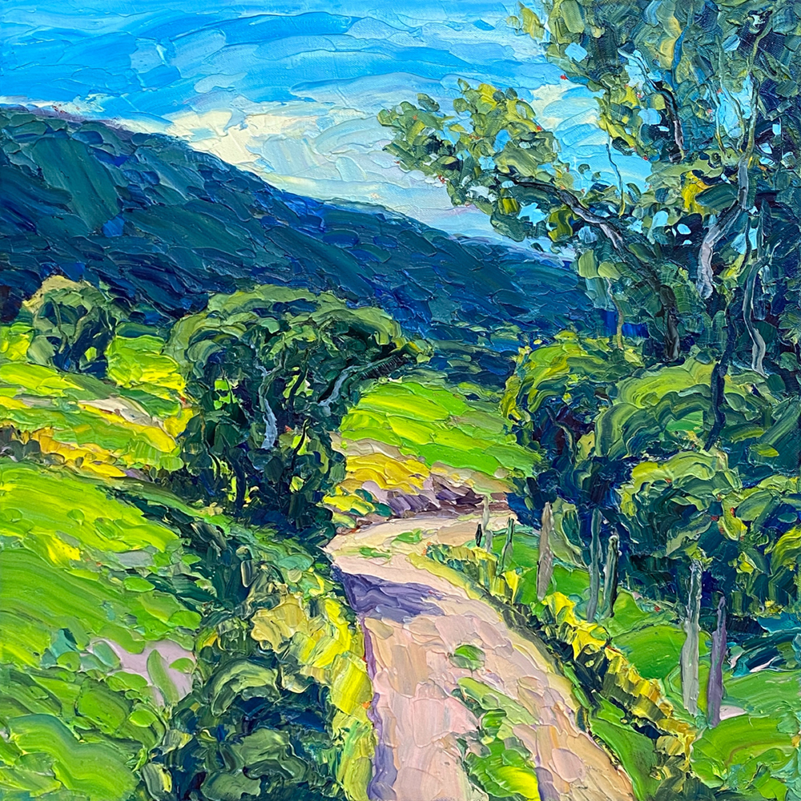
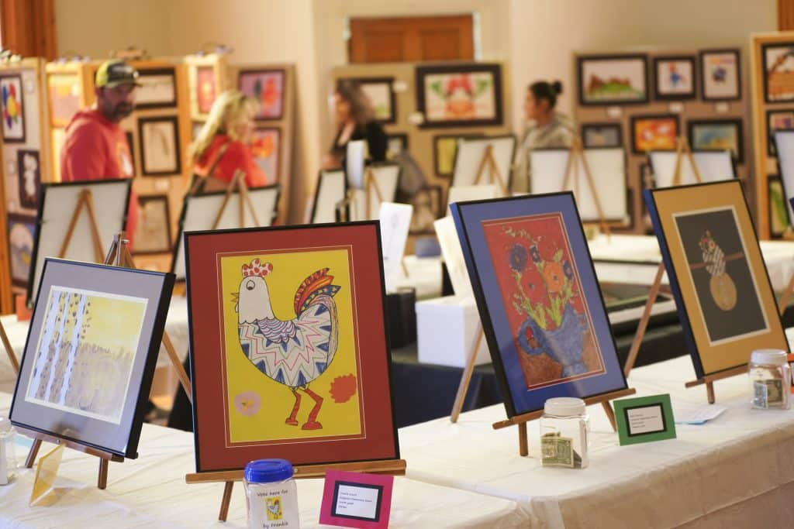

Connecting Artists, Creativity, and Community
ArtConnect is a community-driven platform that showcases local artwork, highlights upcoming art events, and supports artists by providing a space to share their creativity.
Highlighting one of our community’s favorite pieces.

Artist: Maria Lopez
Category:Impressionist Landscape
Medium: Oil on Canvas
Description A vibrant depiction of nature using bold brushstrokes and warm colors.
July 25, 2026: local exhibtion at Houston Art Museum

Date: July 25, 2026
Location: Houston Art Museum
Details: A showcase of local artists featuring paintings, digital art, and mixed media installations.